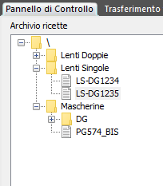
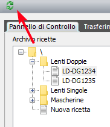

Nelle impostazioni del pannello Robot Yumi, in Skipper, viene definita la posizione della cartella dell’archivio ricette, che può trovarsi sul PC o su unità di rete condivisa. La posizione di default dell’archivio ricette è la sottocartella YumiRecipes del percorso di installazione di Skipper. A partire da questa posizione il programma effettua una ricerca di file .mod e sottocartelle creando un albero di ricette navigabile e modificabile direttamente da programma. L’archivio ricette organizzato a file consente una rapida copia da un PC all’altro, la creazione, cancellazione, cambio di nome dei file mod e delle cartelle si ripercuote immediatamente in una variazione della struttura dell’archivio, senza necessità di operazioni ulteriori da parte dell’operatore. Un secondo archivio, di default ricercato nella sottocartella YumiTemplates, definisce i modelli base da utilizzare per la creazione di nuove ricette. Facendo click sul pulsante di aggiornamento, visibile nella parte alta del pannello, viene effettuata una procedura globale di aggiornamento dello stato: